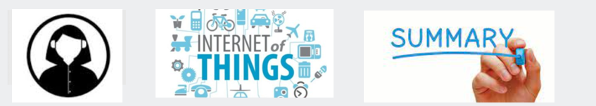

SIT209: IoT Applications Development

ABOUT ME
I am Pallvi, currently pursuing Software Engineering. My academic interests include C++ Programming. When I am not working I like to read books,
spend time with my family and friends. I am interested in knowing more aboutstory. I am looking forward to learn the contents of this unit. I have completed the following units.
| SIT102 | Introduction to Programming |
| SIT111 | Computer Systems |
| SIT192 | Discrete Mathematics |
| SEB101 | Engineering Physics |
| SIT103 | Data and Information Management |
| SIT217 | Robotics Project |
| SIT123 | Data Capture Technologies |
| SIT232 | Object-Oriented Development |
| SIT210 | Embedded Systems Development |
| SIT221 | Data Structures and Algorithms |
| SET111 | Sustainable Design |
| SEJ104 | Engineering in Society |
IoT APPLICATIONS
It refers to collection of software and hardware to receive data from IoT devices, analyze it and make smart decisions.Some of the IOT Applications:
- IoT Application to control Smart Lighting System
- Smart Home IoT Application
- IoT App for Weather Monitoring System
- IoT App for Agricultural Monitoring
- Smart Home Appliances like Smart TV/Refrigerator
- Smart Watch/Wearables
- Home Assistants
SUMMARY OF ACTIVITIES
The activities involves discussion within the team aboutT Applications, Control Interface and features of a Smart Building. Smart referss to receive real-time sensor data through IoT
applications with a user-friendly interface, using machine learning algorithms to provide suggestions or even take decisions and carry out the required task. Smart buildings include
the integration of IoT devices which results in increased efficiency and productivity.
ACTIVITY 1: IoT Application
- IoT Application: It is an interface connected with IoT devices over Internet to collect data and make smart real-time decisions
- Examples: Iot Applications are used to control smart lighting, smart air conditioning , health monitoring (wearables), environment monitoring.
- Features: It includes user friendly interface, access to real-time data, seamless computing, communication between devices, data security.
ACTIVITY 2: Smart Building
- Smart Building: Smart means to take real-time decisions based on data collected from sensors using algorithms and establish communication between IoT devices.
- Smart Building Scenarios: Smart air conditioning based on environment of the temperature, automated lights, doors opening based on sensing individual motion, smart electric meter, biometric security seystem.
- Features: Features of smart building includes integration IoT devices, centralised monitoring and control system, power consumption data, user friendly interface and data security.
ACTIVITY 3: Control Interface
- Users: people living in the smart buildings, employees in smart offices, shopkeepers in smart stores.
- Parts needed: smart sensors like DHT22, LDR sensor, fingerprint sensor, microcontrollers, modems or routers, smartphones
- Features: User-friendly interface, remote access, real-time data collection and monitoring, machine learning algorithms